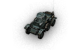
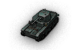
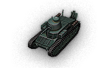
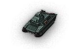
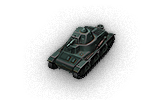
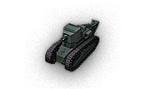
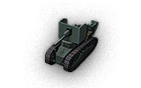
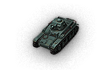

France · Tier II
All nations and tiers · EU v20410 → RU v14600ru · 3 November 2026
AM 39 Gendron-Somua · Tier II

Damage (HP)
EU  AP 27 /
AP 27 /  APCR 27 → RU
APCR 27 → RU  AP 30 /
AP 30 /  APCR 30
APCR 30
Firepower
DPM (HP/min) EU 771.43  RU 947.37
RU 947.37
Rate of fire (rounds/min) EU 28.57 RU 31.58
Reload time (s) EU 2.10 RU 1.90
Potential damage EU 8 100 RU 9 000
Gun handling
Aim time (s) EU 1.80 RU 1.50
Dispersion (m/100 m) EU 0.42 RU 0.38
Dispersion · damaged EU 0.84 RU 0.76
Dispersion · moving EU 0.10 RU 0.05
Dispersion · tank traverse EU 0.15 RU 0.05
Mobility
Turret traverse (°/s) EU 42 RU 60
Armor & health
Health EU 280 RU 360
Track repair time (s) EU 24.06 RU 12
Miscellaneous
View range (m) EU 280 RU 300
AMR 35 · Tier II

Damage (HP)
EU  AP 27 /
AP 27 /  APCR 27 → RU
APCR 27 → RU  AP 30 /
AP 30 /  APCR 30
APCR 30
Firepower
DPM (HP/min) EU 952.94 RU 1 058.82
Potential damage EU 4 185 RU 4 650
Gun handling
Dispersion (m/100 m) EU 0.38 RU 0.36
Dispersion · damaged EU 0.76 RU 0.72
Dispersion · moving EU 0.20 RU 0.14
Dispersion · tank traverse EU 0.20 RU 0.14
Mobility
Forward speed on hard terrain (km/h) EU 34.83 RU 49.42
Forward speed on medium terrain (km/h) EU 30.48 RU 43.24
Forward speed on soft terrain (km/h) EU 18.06 RU 25.63
Engine power (hp) EU 84.58 RU 120
Power/weight (hp/t) EU 12.81 RU 18.18
Turret traverse (°/s) EU 30 RU 40
Armor & health
Track repair time (s) EU 12.03 RU 3
D1 · Tier II

Gun handling
Aim time (s) EU 1.70 RU 1.50
Dispersion (m/100 m) EU 0.53 RU 0.42
Dispersion · damaged EU 1.06 RU 0.84
Dispersion · moving EU 0.29 RU 0.23
Dispersion · tank traverse EU 0.29 RU 0.23
Dispersion · turret traverse EU 0.14 RU 0.08
Dispersion · firing EU 4 RU 1
Mobility
Turret traverse (°/s) EU 24 RU 34
Armor & health
Health EU 340 RU 380
Track repair time (s) EU 12.03 RU 3
Miscellaneous
View range (m) EU 300 RU 310
FCM 36 · Tier II

Penetration (mm)
EU  AP 46 /
AP 46 /  APCR 68 /
APCR 68 /  HE 13 → RU
HE 13 → RU  AP 46 /
AP 46 /  APCR 68
APCR 68
Damage (HP)
EU  AP 27 /
AP 27 /  APCR 27 /
APCR 27 /  HE 33 → RU
HE 33 → RU  AP 30 /
AP 30 /  APCR 30
APCR 30
Firepower
DPM (HP/min) EU 704.35 RU 1 000
Rate of fire (rounds/min) EU 26.09 RU 33.33
Reload time (s) EU 2.30 RU 1.80
Potential damage EU 8 100 RU 9 000
Gun handling
Aim time (s) EU 1.80 RU 1.50
Dispersion (m/100 m) EU 0.41 RU 0.40
Dispersion · damaged EU 0.82 RU 0.80
Dispersion · moving EU 0.24 RU 0.20
Dispersion · tank traverse EU 0.24 RU 0.20
Dispersion · turret traverse EU 0.14 RU 0.10
Dispersion · firing EU 3 RU 1
Mobility
Forward speed (km/h) EU 24 RU 28
Forward speed on hard terrain (km/h) EU 24 RU 28
Forward speed on medium terrain (km/h) EU 24 RU 28
Forward speed on soft terrain (km/h) EU 15.43 RU 22.39
Engine power (hp) EU 120  RU 111.01
RU 111.01
Power/weight (hp/t) EU 9.73 RU 9
Terrain resist (hard) EU 1.05 RU 0.58
Terrain resist (med) EU 1.25 RU 0.77
Terrain resist (soft) EU 2.30 RU 1.47
Turret traverse (°/s) EU 24 RU 34
Tank traverse (°/s) EU 43.81 RU 35.46
Tank traverse on hard terrain (°/s) EU 47.78 RU 35.46
Tank traverse on medium terrain (°/s) EU 40.43 RU 26.63
Tank traverse on soft terrain (°/s) EU 21.90 RU 13.97
Armor & health
Health EU 280 RU 380
Track repair time (s) EU 12.03 RU 3
Miscellaneous
View range (m) EU 300 RU 280
Hotchkiss H35 · Tier II

Gun handling
Aim time (s) EU 2 RU 1.50
Dispersion · moving EU 0.30 RU 0.24
Dispersion · tank traverse EU 0.30 RU 0.24
Mobility
Turret traverse (°/s) EU 24 RU 34
Armor & health
Health EU 320 RU 340
Track repair time (s) EU 12.03 RU 3
Renault FT 75 BS · Tier II

Gun handling
Dispersion · moving EU 0.30 RU 0.26
Dispersion · tank traverse EU 0.30 RU 0.26
Dispersion · turret traverse EU 0.34 RU 0.30
Armor & health
Health EU 160 RU 200
Track repair time (s) EU 13.16 RU 3
Renault FT AC · Tier II

Gun handling
Dispersion · moving EU 0.28 RU 0.18
Dispersion · tank traverse EU 0.28 RU 0.18
Mobility
Forward speed (km/h) EU 21 RU 26
Forward speed on hard terrain (km/h) EU 21 RU 26
Forward speed on medium terrain (km/h) EU 21 RU 26
Forward speed on soft terrain (km/h) EU 16.80 RU 19.42
Reverse speed (km/h) EU 8 RU 12
Engine power (hp) EU 47.58 RU 55
Power/weight (hp/t) EU 10.15 RU 11.74
Tank traverse on hard terrain (°/s) EU 34.08 RU 32.49
Tank traverse on medium terrain (°/s) EU 28.84 RU 27.49
Tank traverse on soft terrain (°/s) EU 16.30 RU 15.54
Armor & health
Health EU 240 RU 390
Track repair time (s) EU 12.03 RU 3
Miscellaneous
Fire chance (%) EU 20 RU 15
Renault R35 · Tier II

Firepower
DPM (HP/min) EU 923.08 RU 1 000
Rate of fire (rounds/min) EU 23.08 RU 25
Reload time (s) EU 2.60 RU 2.40
Gun handling
Aim time (s) EU 2 RU 1.60
Dispersion · moving EU 0.30 RU 0.24
Dispersion · tank traverse EU 0.30 RU 0.24
Mobility
Forward speed (km/h) EU 23 RU 28
Forward speed on hard terrain (km/h) EU 23 RU 25.99
Forward speed on medium terrain (km/h) EU 23 RU 23.99
Turret traverse (°/s) EU 24 RU 34
Armor & health
Health EU 310 RU 340
Track repair time (s) EU 12.03 RU 3
Miscellaneous
View range (m) EU 300 RU 310